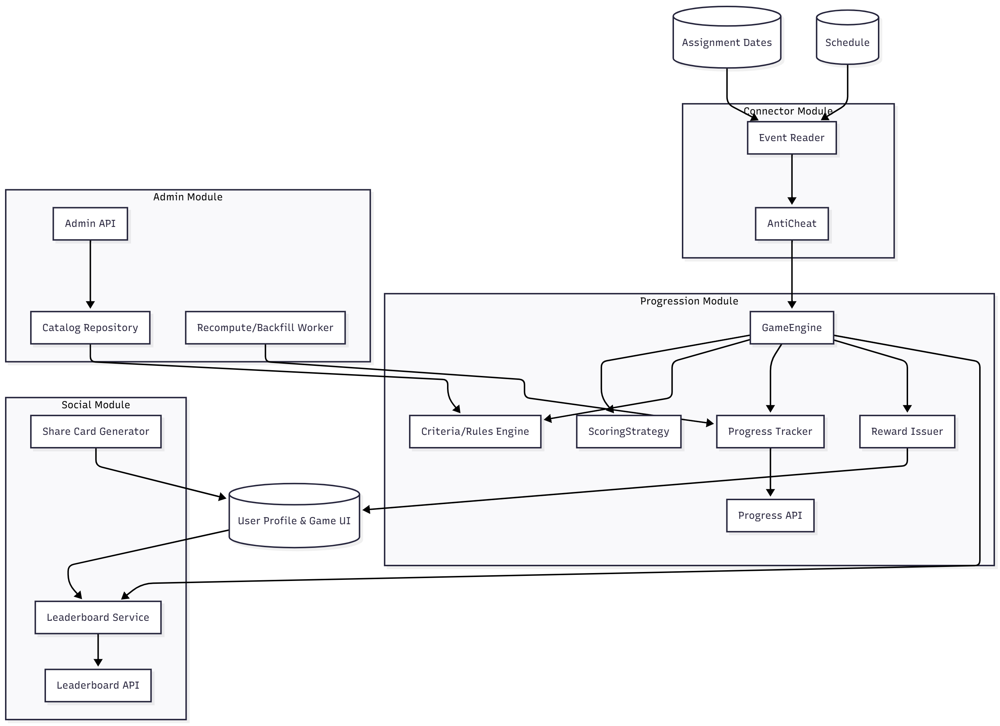

High Level Design
Game and Achievements
The Game and Achievements subsystem is designed using a modular, object-oriented architecture that enmphasizes scalability, maintainability, and event driven communication between modules. As shown in the figure below the system is divided into four primary managable modules: Connector, Progression, Social, and Admin. Each of the modules are responsibile for a direct set of functionality ranging from event registration and forming custom achievements for users, making a leaderboard to compare with friends, and admin control to ensure small changes without having to write new code. Together, these modules collectivaly address all the functional and non-functional requirements for the game and achievements layer of the Ai Academic Companion.
- Connector Module: Receives study/quiz/weekly events from the external subsystems, ensures they're in the correct format to be processed by this system and creates and stores events to the game engine
- Progression Module: Calculates XP, manages streaks, evaluates criteria against the catalog, and rewards user with badges and acheivements
- Social Module: Maintains leaderboards (friends/class/school) and generates shareable achievement cards to be posted and be viewed by other uses to show off earned awards
- Admin & Catalog Module: Host the achievement catalog and the recompute/backfill jobs
Connector Module
Purpose: Safely bring the external data into the game subsystem
- Classes: EventReader and AntiCheat
- Responsibilties:
- Validate data being passed and ensures correct format (FR-010, NFR-002)
- Apply an anti-cheat to detect for unrealistic or duplicate session and flags suspicious events (FR-010)
- Interfaces:
- POST game/event/user/{username}/week/{weekid} to store events (FR-009, NFR-003)
Progression Module
Purpose: Deterministic computation of XP, streaks, and achievements
- Entities / Value Objects: Player, Progress, Streak, Achievement, Reward
- Classes: GameEngine, ScoringStrategy, RulesEngine/Criteria, RewardIssuer, Progress Tracker
- Responsibilities:
- Game Engine sends events to the scoring ScoringStrategy to collect xp values for each event (FR-003)
- Game Engine passes the event data with the xp values to Criteria/Rules Engine to make custom achievable goals to set as acheivements for the user to reach in a given week (FR-002)
- Stores achievements to be earned to Criteria API for user
- When Game Engine hears an event from external systems it passes it to the progress tracker to store the event (FR-004)
- After an event is stored in the progress tracker, the game engine asked the reward issuer if there are any rewards to be issued (FR-005)
- Evaluate criteria against the catalog and award badges (FR-001, FR-002, FR-005)
- Send notifications on badge/level changes (FR-005)
- Interfaces:
- GET /game/user/{username}/progress — progress, XP, level, streak, badges (FR-006, FR-009, NFR-003)
- Domain Events: ProgressUpdated, BadgeAwarded, LevelUp
Social Module
Purpose: Way to view and showoff rankings and shareables to yourself and other users
- Classes: LeaderboardService, Leaderboard API, Share Card Generator
- Responsibilities:
- Maintain leaderboards for friends/course/global with daily/weekly/semester windows (FR-007)
- Respect privacy by supporting school only views to limit users max view of only students at their school
- Generate shareable achievement card data and sends it to UI to make visual to display component containing user's username and badge metadata (FR-008)
- Interfaces:
- GET /game/leaderboards?scope={timeframe, school} (FR-009, NFR-003)
- GET /game/sharecard/{achievementId} (FR-009, NFR-003)
Admin Module
Purpose: Safe testing and fixing of the game
- Classes: CatalogRepository, Admin API, RecomputeWorker
- Responsibilities:
- Keeps database of achievements/quests with schema validation, visibility, and season windows (FR-001)
- Recompute/backfill user progress when rules change (FR-011)
- Interfaces:
- POST /game/admin/catalog
- POST /game/admin/recompute
Data Views
- Catalog Item: { id, title, icon, rarity, criteria, rewards, season_window, active }
- Player Progress: { playerId, xp, level, streak{days, lastActive, graceLeft}, badges[] }
- Leaderboard Row: { scope, window, rank, username, score, username }
Upload Profile
Components
- C-01 Extension: Starts the import and shows basic results. [FR-101, FR-102, FR-103, FR-104]
- C-04 Profile: Holds profiles, versions, rules, and provenance. [FR-101, FR-105, FR-109, FR-111, FR-112, FR-114, NFR-104]
- C-07 Canvas: Connects to Canvas and turns incoming data into a common format. [FR-101, FR-106, FR-107, FR-108, NFR-101]
- C-08 Calendar: Reads events (read-only) to help find overlaps. [FR-103, FR-115]
- C-05 Gateway: Routes requests and manages background work. [NFR-102, NFR-107]
- C-10 Access: Handles permissions and secure access. [FR-113, NFR-101, NFR-109]
- C-11 Storage: Databases, files, background jobs, and backups. [FR-110, FR-112, NFR-102, NFR-108, NFR-112]
Flow
- Start: The user begins an import and picks a source (Canvas or file). [FR-101]
- Connect: The system gets access to Canvas when needed, or accepts the file and stores it. [FR-101, NFR-101, NFR-109]
- Format: Incoming fields are mapped to a common format. [FR-106]
- Check: The system does basic checks (codes, dates, times). Invalid rows are noted. [FR-107]
- Clean Up: Obvious duplicates are merged. [FR-108]
- Same Data: If the data is the same as before, no new version is created. [FR-109]
- Blocks and Settings: Time blocks and simple preferences are saved. [FR-102, FR-104, FR-111]
- Overlaps: Calendar events are read and a short overlap summary is stored. [FR-103, FR-115]
- Save: A new version with source details and an audit record is created. [FR-105, FR-112, FR-114, NFR-104]
- When Services Are Down: File import still works; the system will try outside services again later. [NFR-103]
- Timeliness: The import starts quickly and longer work runs in the background. [NFR-102]
System Qualities
- Most imports should finish successfully over time. [NFR-105]
- Keep basic logs and counts for troubleshooting. [NFR-106]
- Use safe request limits with backoff when needed. [NFR-107]
- Keep versions small and limit how many are stored. [NFR-108]
- Handle secrets and tokens safely. [NFR-109]
- Support delete-on-request and common student data practices. [NFR-110]
- Do not break older data when the format changes. [NFR-111]
- Be able to restore profiles from backups. [NFR-112]
Selected APIs
POST /profile/import { source:"canvas|file", fileRef? } → 202 { jobId } [FR-101, NFR-102]
GET /profile/version/{id} → 200 { profile } [FR-105, NFR-104]
POST /profile/constraints → 200 { saved:true } [FR-102]
POST /profile/preferences → 200 { saved:true } [FR-104]
GET /calendar/preview → 200 { events[] } [FR-103]
AI Tutor
Component Overview
The AI Tutor component exists under the ID HLD-201. The AI Academic Companion contains this component which operates as its intelligent learning assistance subsystem. The system operates through large language models and natural language processing technology. The system delivers individualized tutoring support which adapts to specific situations. The component receives data from the scheduler and Canvas feeds.
Architectural Design
The AI Tutor operates through a structured design system which includes multiple layers. The system consists of three essential operational layers.
HLD-201.1: Presentation Layer (User Interface)
Chat Interface Module: The system offers users a conversational interface through this module. The UI exists as a part of the Chrome extension and HokieSPA interface. The module executes multiple essential functions which include:
- The system displays messages in real time while supporting text and code blocks and mathematical notation.
- The system checks user input for validity before processing queries.
- The system maintains conversation history through its session management system.
- The system displays loading indicators which progress as AI operations extend their duration.
Quiz Interface Module: The system shows students interactive assessment content through this module. The assessment contains different types of questions. The assessment includes three question types which are multiple choice and short answer and code completion. The system shows immediate feedback to users through its interface.
Dashboard Module: The dashboard module shows students their study progress through analytics and provides them with personalized recommendations. The system uses visual summaries and charts to display information.
HLD-201.2: Business Logic Layer (Tutoring Engine)
The core AI tutoring operations run through this layer.
Query Processing Service (HLD-201.2.1):
- The system accepts natural language queries from the presentation layer.
- The system identifies the intended action from user input.
- The system identifies essential information which includes course names and topic names and assignment references.
- The system directs requests to specific handlers which handle particular tasks.
Content Retrieval Service (HLD-201.2.2):
- The system accesses relevant course materials through its connection to the Canvas Integration component.
- The system stores frequently accessed content in its local database to enhance system performance.
- The system performs semantic searches across course documents to locate relevant passages that match the context.
- The system works with the Scheduler component to determine the current study session details.
AI Model Orchestration Service (HLD-201.2.3):
- The system maintains active connections to its underlying large language model infrastructure.
- The system uses pre-defined prompt templates which optimize results for specific tutoring activities.
- The system streams model responses in real time to provide immediate user feedback.
- The system applies additional filters to ensure responses match both appropriateness standards and accuracy requirements.
- The system activates alternative processing systems when the main model becomes unavailable.
Quiz Generation Service (HLD-201.2.4):
- The system analyzes educational materials to discover essential subjects and essential learning targets.
- The system creates multiple question formats which match the subject matter requirements.
- The system uses spaced repetition methods to determine which topics need review first.
- The system adjusts question complexity based on student performance data from their past work.
- The system checks all generated questions for both their correct answers and their clear understanding.
Explanation Service (HLD-201.2.5):
- The system generates explanations at different levels based on user preference selection.
- The system creates educational examples from real-world situations to help students understand complex concepts.
- The system develops complete problem solutions which include all necessary intermediate steps.
- The system detects missing foundational knowledge areas and provides basic explanations to students.
Summarization Service (HLD-201.2.6):
- The system processes extensive reading materials and lecture notes and textbook sections.
- The system identifies essential information along with definitions and important theorems from the content.
- The system produces summaries at different levels of detail.
- The system shows students how different topics relate to each other through cross-referenced concepts.
Recommendation Engine (HLD-201.2.7):
- The system uses student performance data to detect knowledge deficits.
- The system reviews upcoming deadlines which the Scheduler component provides.
- The system uses a weighted scoring algorithm to determine study priority order.
- The system generates specific study recommendations which students can use at the beginning of their study sessions.
HLD-201.3: Data Layer
Student Interaction Database (HLD-201.3.1):
- The system stores all user interactions including conversations and queries and AI responses in this database.
- The system tracks student quiz performance through timestamped records that include difficulty levels.
- The system monitors which subjects students study and how long they spend on each subject.
- The system uses efficient retrieval methods to access previous user interactions from its database.
Course Content Cache (HLD-201.3.2):
- The system stores processed course materials which it retrieves from Canvas through this database.
- The system uses document vector embeddings for semantic search operations.
- The system implements expiration rules to update content that becomes outdated.
- The system organizes content by subject and module and topic to support efficient information retrieval.
Model Configuration Store (HLD-201.3.3):
- The system stores all prompt templates together with model parameters and tuning settings in this database.
- The system tracks all model updates and A/B testing results through its version control system.
- The system monitors model performance through response time measurements and accuracy rating assessments.
Component Interactions
The AI Tutor system exchanges data with other system components through specific interfaces.
With Scheduler Component:
- Input: The system receives study session information which includes course details and scheduled time and session objectives.
- Output: The system generates time projections for students to perform their recommended study tasks.
- Rationale: The tutoring system generates recommendations which match the available study time of students.
With Canvas Integration Component:
- Input: The system fetches all course materials and assignment information and upcoming deadline schedules.
- Output: The system generates particular content based on what students ask for.
- Rationale: The system bases its tutoring responses on official course materials to maintain precise information.
With Gamification Component:
- Input: The system accepts achievement standards and performance targets for student advancement.
- Output: The system tracks student tutoring activities through their quiz completion rates and their study duration and their acquired subject knowledge.
- Rationale: The system allows students to earn rewards through their participation in tutoring activities and their achievement of learning targets.
With Student Profile Component:
- Input: The system accesses student learning preferences together with their past performance records and their disability requirements.
- Output: The system maintains updated information about student topic understanding and learning performance metrics.
- Rationale: The system delivers customized tutoring methods through its understanding of student-specific requirements.
Technology Stack
- Frontend: The application uses React.js for building UI elements and Socket.io for enabling real-time chat functionality.
- Backend: The API services operate through Node.js with Express while Python handles AI and machine learning processing tasks.
- AI and Machine Learning: The system uses OpenAI GPT-4 API as its main model while LangChain handles prompt orchestration and Sentence Transformers generate embeddings.
- Database: The system uses PostgreSQL for storing relational data and Pinecone or Weaviate for vector search operations.
- Caching: The system uses Redis for handling user sessions and storing content data.
Data Flow Diagram
graph TD
A[Student] -->|Query| B[Chat Interface]
B --> C[Query Processing Service]
C --> D{Intent Classification}
D -->|Question| E[Content Retrieval Service]
D -->|Quiz Request| F[Quiz Generation Service]
D -->|Explanation| G[Explanation Service]
D -->|Summary| H[Summarization Service]
E --> I[Canvas Integration]
E --> J[Course Content Cache]
F --> K[AI Model Orchestration]
G --> K
H --> K
K --> L[LLM API]
L --> K
K --> M[Response]
M --> B
B --> A
K --> N[Student Interaction DB]
N --> O[Recommendation Engine]
O --> P[Dashboard Module]
P --> A
Traceability Matrix: AI Tutor Requirements to Design Components
| Requirement ID | Design Component(s) | Rationale |
|---|---|---|
| FR-201.1 | HLD-201.2.1, HLD-201.2.3 | Query Processing Service handles natural language processing. AI Model Orchestration generates responses. |
| FR-201.2 | HLD-201.2.2, HLD-201.3.2 | Content Retrieval Service fetches Canvas data. Content Cache stores it efficiently. |
| FR-201.3 | HLD-201.2.4, HLD-201.3.1 | Quiz Generation Service creates adaptive quizzes. Interaction Database tracks performance. |
| FR-201.4 | HLD-201.2.6 | Summarization Service provides multi-level reading comprehension. |
| FR-201.5 | HLD-201.2.5, HLD-201.2.3 | Explanation Service generates multi-modal content using AI orchestration. |
| FR-201.6 | HLD-201.2.7 | Recommendation Engine analyzes data and prioritizes study topics. |
| FR-201.7 | HLD-201.3.1, HLD-201.1 Dashboard | Interaction Database stores analytics. Dashboard Module visualizes progress. |
| NFR-201.1 | HLD-201.3.2, Redis Caching | Content caching and optimized data structures ensure fast response times. |
| NFR-201.2 | HLD-201.2.3, HLD-201.2.2 | Model Orchestration includes confidence scoring. Content Retrieval grounds responses. |
| NFR-201.3 | All Data Layer Components | Encryption and authentication and FERPA-compliant data handling throughout the system. |
| NFR-201.4 | Backend Architecture | Microservices design with horizontal scaling and load balancing support. |
| NFR-201.5 | HLD-201.1 Presentation Layer | UI modules implement WCAG 2.1 AA standards with accessibility features. |
| NFR-201.6 | HLD-201.3.3, HLD-201.2.3 | Model Configuration Store enables versioning. Orchestration Service supports updates. |
| NFR-201.7 | All HLD-201 Components | RESTful APIs and event-driven architecture ensure loose coupling between components. |
UI
The UI is the interactive layer between the user and the backend, which will be made using object-oriented architecture. The goal will be to maximize efficiency, maintainability, and reliability because the website should not be bogged down from visuals.UI Diagram
Header Module: Provides the navigation for users by including embedded links to access various parts of the website.Footer Module: Provides information about the website, and social media links.
Buttons Module: Handles all the user interactions for approving information, clicking on links or confirming actions.
Text Field Module: Handles all the user interactions for adding information about their schedules and for communication with the AI tutor.
Dashboard Module: Displays the users' schedule, and previous tutoring sessions.
Timeout Module: Ensures the user is logged out for inactivity for security reasons.
Languages/Libraries
· React/TypeScript will be used to create all the visuals and charts because they provide a live reactive display.· CSS will be used to change color and improve the aesthetics with padding and margins.
Modules
Header Module
Purpose: Provides navigation to the different pages and displays if the user is signed in.Class: Header
Responsibilities:
· Display Navigation links to the main pages [FR-303]
· Maintain a constant position at the top of the screen [FR-304]
· Change with the screen. [FR-305]
Footer Module
Purpose: Display website information and social media linksClass: Footer
Responsibilities:
· Show website "about us" links and social media links. [FR-304]
· Remain at the bottom of the page. [NFR-304]
Buttons Module
Purpose: Allow users to interact with the system.Classes: Any that involves a click interaction.
Responsibilities:
· Allow users to approve message or send information. [FR-301]
· Complete backend information for the AI tutor or confirmation for a link. [FR-301,303].
Text Field Module
Purpose: Allow users to add information into text boxes/Class: Schedule, AITutor, Profile
Responsibilities:
· Provide text boxes and ability for input. This will allow users to add information for tutors, set up their profile, and set up their schedule. [FR-302]
· Send error message in case backend is not up or AI is down. [NFR-303]
· Store data for signed-in users. [NFR-304]
Dashboard Module
Purpose: Display users tutoring history and progress with schedule achievements.Classes: Dashboard, Achievements, Data
Responsibilities:
· Display academic progress, and AI tutoring sessions. [FR-306]
· Access backend data/ [NFR-301,NFR-302]
Timeout Module
Purpose: Manage user activity for timeout.Class: Timeout
Responsibilities:
· Monitor time of inactivity and display a warning. [FR-307]
· Log out user and send them to a inactivity screen. [NFR-304]
Traceability Matrix (User Interface Design Rationale)
| Design Decision | Supports Requirements |
|---|---|
| D1: Keep the layout clean and consistent | FR-303, FR-304, NFR-301, NFR-302 |
| D2: Prioritize fast and responsive feedback | FR-301, FR-302, NFR-301, NFR-303 |
| D3: Use modular, reusable components | FR-304, FR-305, NFR-302 |
| D4: Validate and guide user input early | FR-302, NFR-303 |
| D5: Design for accessibility and adaptability | FR-305, NFR-303 |
| D6: Maintain smooth session and error handling | FR-307, NFR-304, NFR-303 |
| D7: Keep visuals lightweight and efficient | NFR-301, NFR-302 |
| D8: Protect user data and maintain privacy | FR-307, NFR-304 |
Scheduler
Overall Design
Required Frameworks/External Libraries
- ChatGPT/Openai API: This will be the LLM used to generate the schedules.
- Canvas: This will be used to gather user's assignments, due dates, and events
Data Integration Layer: This will be used to gather prerequisite data to send to the AI companion to start the schedule generation process. The prerequisite date includes: assignments from the user's profile on Canvas (due dates and names), user's preferred gym hours, study hours, breaks, personal time, and any other extracurriculars that the user would like to be on their schedule.
Main Schedule Generation Layer: This is where the schedule will be generated for a user. The AI Companion will have received data from the data integration layer, and will create an effective and manageable schedule. Any edits from the frontend are then communicated back to the AI Companion that will update and change the schedule, which will then reflect back to the frontend.
Database: This is where the user's schedules will be stored. Previous schedules will be stored so that the AI Companion can refer to them and learn from any changes from the user. This way the AI Companion can create more effective schedules for its user.
Frontend Layer: The frontend layer will be displayed to the user. Specifically, it will show the calendar with the schedule that the AI Companion had created, and from there, the system will notiy users about upcoming due dates or any assignment changes. Moreover, the user is able to make edits to the schedule that will then be sent back to the AI Companion to update the schedule.
Data Integration
- Classes: API Data and User Data
- Responsibilities:
- Grab data from 3rd party APIs (Canvas) to get user's classes, assignments, and due dates. (FR-402, NFR-407, NFR-408)
- Query the user for specific constraints they would like to have for the schedule. (FR-401, FR-403)
- Formatting and cleaning data for the AI Companion.
- Grabbing consent from the user to be able to use their sensitive student infromation. (NFR-409)
Main Schedule Generation
- Classes: AI Companion, User Edits, Schedule
- Responsibilities:
- Receive data from the Data Integration Layer to query LLM to generate the user's schedule. (FR-404, NFR-401)
- Keep checking data from API Data to ensure the system is in synch with Canvas and the user's assignments and classes and make any necessary changes and updates to the user's schedule. (FR-405, NFR-402, NFR-403, NFR-411)
- Notify the user when any updates/changes to the schedule were made. (FR-407)
- Learning from any manual changes from the user and from previous schedules in the database. (NFR-410)
Database
- Responsibilities:
- Store any edits that the user has made. (NFR-404, NFR-405)
- Store previous weeks' schedules.
- Keep a history of schedules so that the AI Companion can use them to learn and hone in on the user's preferences. (NFR-410)
Frontend Layer
- Classes: User Edits, Calendar, Notification System, User Feedback
- Responsibilities:
- Ensure the user is able to interact with the visual schedule to make any necessary changes. (FR-406, FR-412)
- Taking the schedule from the AI Companion and displaying it nicely to the user. (FR-411)
- Constantly notifying the user when any changes to the schedule have been made and synchronizations from Canvas.(FR-407)
- Notify the user for when the AI Companion recommends any new habits the user should adopt to keep the schedule. (FR-409)
- Any feedback the AI Companion requests will be presented here and any feedback will be send back to the AI Companion. (FR-408, FR-410)